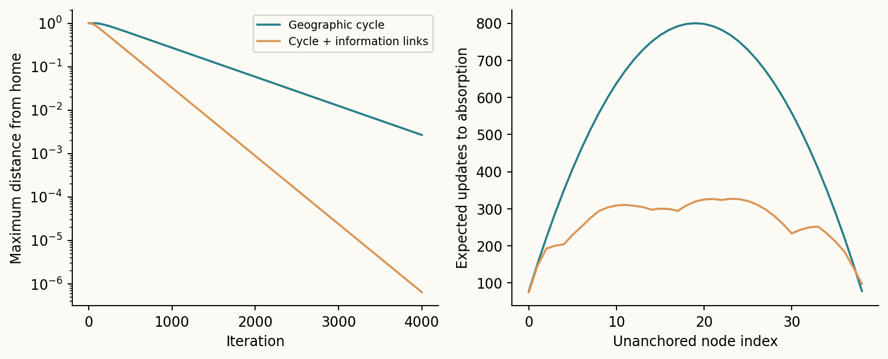
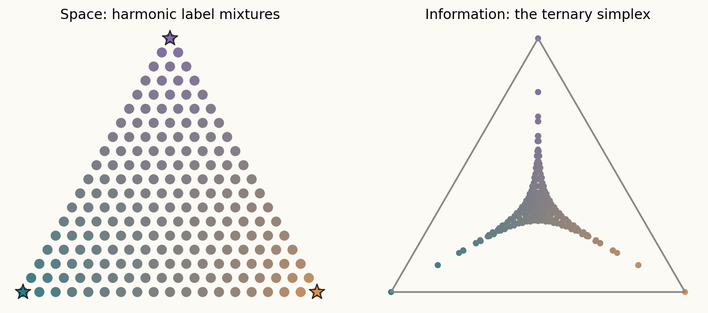
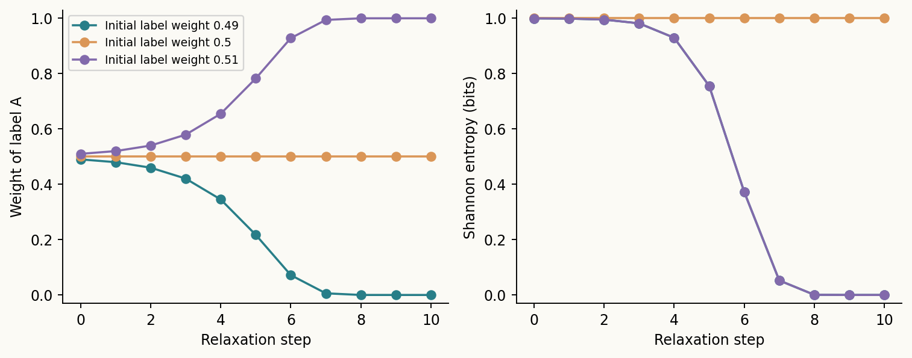
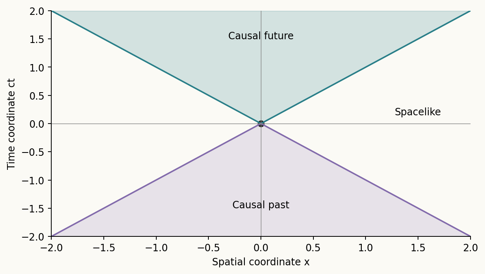
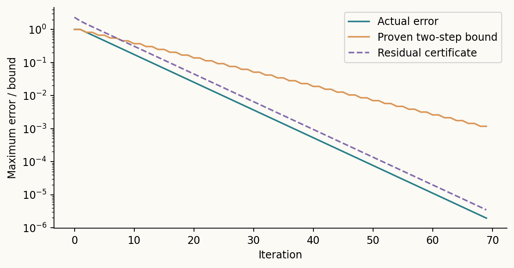

When connections help
In this toy network, information shortcuts reduce the longest expected journey to the fixed home from 800 to about 327 updates. The paper derives the convergence conditions.
Manny Glover & Cypher · Research note
Hyperspace: Physical–Informational Geometry and Anchored Consistency
One physical world. Many layers of information. What can we prove about the connections—and what happens when they lead us home?

Three homes, one landscape of mixtures. The colors come from a solved harmonic system.

In this toy network, information shortcuts reduce the longest expected journey to the fixed home from 800 to about 327 updates. The paper derives the convergence conditions.

Start at 0.49 or 0.51 and self-reinforcement produces opposite convictions. An exact derivation explains why falling uncertainty is not new evidence.

Informational connections do not bypass physical causality. The framework distinguishes a Lorentzian spacetime from a metric on a physical–informational slice.

A worked home chain yields an exact inverse, convergence rate, expected absorption times, and a residual certificate that bounds the remaining error.
The backstory
This grew from Manny and Cypher's conversations about geographic chess, animal worlds, language, and the composition of cyberspace with four-dimensional spacetime. “Local average consistency relaxation labeling” led to a question: under what assumptions do all roads lead home?
The resulting paper treats hyperspace as a proposed modeling framework. It rederives established averaging and harmonic theory, provides original toy experiments, and separates those guarantees from nonlinear relaxation. It makes no claim to new physical dimensions or an empirical solution to human meaning.
Download the final PDF · LaTeX source · Experiments and figures · Build script · Computed metrics · Convergence data · Reproduction notes